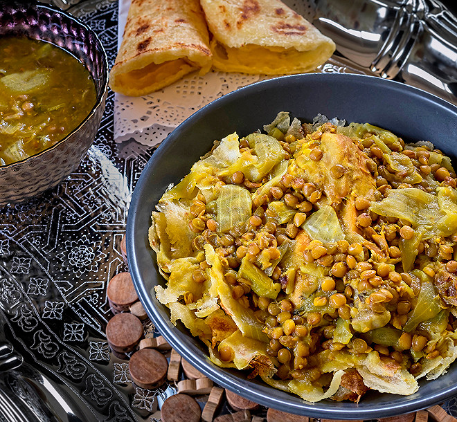

Rfissa

Description
Rfissa is a moroccan traditional meal based on Msemen and other ingredients. It is also called Trid or Hemiss.
You’ll find rfissa served for family gatherings and casual company meals. It’s also traditionally served on the third day following the birth of a baby, due to the health benefits that fenugreek offers a nursing mother. Of course, it can be offered at other times as well.
Ingredients
- Chicken
- Msemen
- Onion
- Ginger
- Lentils
- Saffron
- Smen
- Parsley
- Garlic
- Cilantro
Steps to follow
- Place the pot with the chicken on the stove over medium heat and cook, covered, stirring occasionally, for about 15 to 20 minutes, until a rich sauce has formed.
- Add the drained lentils, parsley, cilantro and the water. Simmer, covered, over medium-low to medium heat for about 1 hour, or until the lentils are tender and the chicken is well-cooked. There should be rich, ample broth in the pot. (If there’s not, add a little water during cooking, tasting to be sure that the seasoning is not diluted.)
- Taste the broth for salt, then add the smen, swirling the pot to incorporate it into the broth. If desired, remove the chicken from the pot and place it under a broiler for a few minutes to brown and crisp the skin.
Back to all the recipes